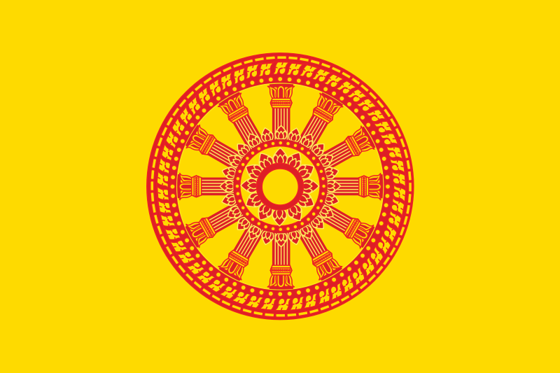

ตำนานพุทธศาสนา ๒๐๐๐ ปี
นิพพานหรือการหลุดพ้นจากการเกิดและดับ
นิพพานหรือการหลุดพ้นจากการเกิดและดับ
ศาสนาที่มีพระพุทธเจ้าเป็นศาสดา เป็นศาสนาอเทวนิยม
ปฏิเสธการมีอยู่ของพระเป็นเจ้าหรือพระผู้สร้าง เกิดที่
ประเทศอินเดีย มีประวัติยาวนานกว่า 2000 ปีมาแล้ว
นิยมนับถือเป็นอันดับ 4 ของโลก แพร่หลายในเอเชีย
เป็นศาสนาแห่งการพิจารณาเหตุผลและการปฏิบัติเพื่อช่วยตัวเอง
พึ่งตัวเอง ให้เป็นคนดี และขยายความช่วยเหลือไปสู่ผู้อื่น
ด้วยความปรารถนาดี และความคิดช่วยให้พ้นทุกข์
พระสัมมาสัมพุทธเจ้า
หรือ พระพุทธเจ้า
เถรวาres.png" height="100%">
รูปธรรมจักร มีความหมายว่า ล้อแห่งธรรม
คือจักรแห่งธรรม อันประเสริฐที่
พระพุทธเจ้าได้ทรงหมุนให้ขับเคลื่อน
ไปในใจของชาวโลก

บุคคลที่นับถือ
จำแนกได้เป็น 4 ประเภท ภิกษุ ภิกษุณี
อุบาสก อุบาสิกา หรือที่เรียกว่า พุทธบริษัท 4